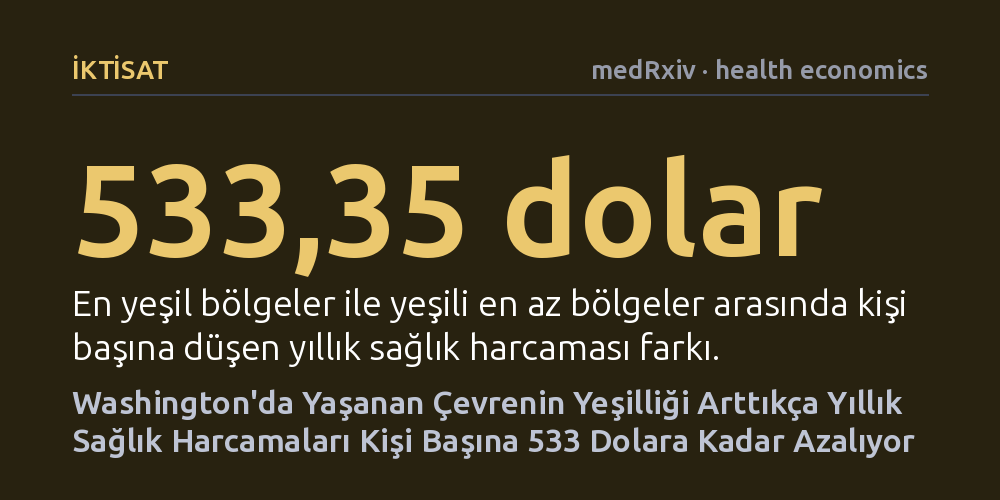

IKTISAT · medRxiv · health economics · 2026-10-25
Araştırmacılar, Washington eyaletinde yeşil alan yoğunluğunun sağlık harcamalarına etkisini uydu verileri ve ekonomik modellemeyle inceledi. En yeşil mahallelerde kişi başı yıllık sağlık harcamasının 533 dolar daha düşük olduğu ve yeşillendirme adımlarının eyalete yılda on milyonlarca dolar kazandırabileceği hesaplandı.
Yeşil alan yatırımlarının yalnızca estetik bir çevre düzenlemesi değil, kamu sağlık bütçesini doğrudan rahatlatabilecek koruyucu bir altyapı yatırımı olduğunu gösteriyor.

Şehirlerdeki parklar, korular ve ağaçlıklı sokaklar çoğu zaman sadece estetik bir ayrıntı ya da dinlenme alanı olarak değerlendirilir. Oysa doğayla iç içe yaşamanın stresi azalttığı, bireyleri fiziksel aktiviteye teşvik ettiği ve hava kirliliğini filtreleyerek genel halk sağlığını desteklediği uzun süredir bilinmektedir. Buna karşın araştırmacıların ve şehir planlamacılarının yanıtlamakta zorlandığı temel bir soru vardı: Doğaya yakın yaşamak, bireylerin ve kamunun hastane ve ilaç harcamalarını ölçülebilir şekilde aşağı çekebilir mi?
Kamu kaynaklarını yöneten karar vericiler açısından yeşil alanların soyut sağlık kazanımları, bütçe ayrılmasını sağlamak için her zaman yeterli bir gerekçe oluşturmuyor. Yeni bir park inşa etmek ya da sokakları ağaçlandırmak maliyeti hemen görülen, fakat parasal geri dönüşü net biçimde ortaya konamayan bir yatırım olarak kalıyordu. Bu belirsizliği gidermeyi amaçlayan araştırmacılar, kentsel yeşillendirmenin sağlık harcamalarında ne kadarlık bir tasarruf potansiyeli taşıdığını somut maliyet hesaplarıyla ortaya koymaya odaklandı.
Araştırma ekibi bu ilişkiyi incelemek için Washington eyaletinde sıfırdan bir klinik çalışma yürütmek yerine, çevre ve sağlık ekonomisinde yaygın olarak kullanılan 'fayda aktarımı' modelinden yararlandı. İlk olarak, komşu bölge olan Kuzey Kaliforniya'da yaklaşık beş milyon üyesi bulunan büyük bir sağlık sigortası konsorsiyumunun (Kaiser Permanente) verileri incelendi. Bu kohortta kişilerin yaşadıkları mahalleler yeşillik yoğunluğuna göre en az yeşilden en çok yeşile doğru on eşit dilime (desile) ayrılmış ve her dilimdeki sağlık harcaması oranları belirlenmişti.
Araştırmacılar daha sonra uydu görüntülerinden elde edilen bitki örtüsü yoğunluğu (NDVI) ölçümlerini kullanarak Washington eyaletindeki tüm nüfus sayım bloklarını analiz etti. Her mahallenin yeşillik düzeyi tespit edildikten sonra, Kaliforniya verisinden gelen maliyet oranları Washington'a uyarlandı. Modelin eyaletin kendi ekonomik gerçeklerini doğru yansıtması amacıyla tüm oranlar, Washington'ın 2020 yılı kişi başına düşen yıllık sağlık harcaması düzeyiyle kalibre edildi.
Elde edilen sonuçlar, bulunulan çevredeki yeşil örtü yoğunlaştıkça yıllık sağlık harcamalarının düzenli biçimde gerilediğini gösterdi. Washington'da yeşil alanı en az olan yüzde 10'luk dilimde kişi başına yıllık sağlık harcaması 6.472,75 dolar iken, en yeşil yüzde 10'luk dilimde bu harcama 5.939,39 dolara kadar düşüyordu. İki uç dilim arasındaki 533,35 dolarlık fark, doğayla temasın bireysel sağlık bütçelerinde hissedilir bir rahatlama sağladığına işaret etti.
Araştırmacılar bu bireysel farkın eyalet çapında nasıl bir ekonomik kazanca dönüşebileceğini anlamak için çeşitli yeşillendirme senaryoları simüle etti. En çorak durumdaki en alt yüzde 10'luk kesimin bir üst dilime çıkarılması eyalet genelinde yılda 45,6 milyon dolar tasarruf vadediyordu. En alttaki dört dilimin tamamının beşinci dilim seviyesine yükseltilmesi durumunda yıllık tasarruf 157,7 milyon dolara ulaşıyordu. Benzer şekilde, Washington'ın en büyük beş şehrinin kent merkezlerinde yapılacak hedefli bir yeşillendirme müdahalesinin dahi yıllık 56,9 milyon dolarlık bir sağlık harcaması tasarrufu sağlayabileceği hesaplandı.
Elde edilen çarpıcı tasarruf rakamlarına rağmen çalışmanın yöntemsel sınırlarını göz ardı etmemek gerekir. Yazarların açıkça belirttiği gibi, "Bu tahminler nedensel tahminler değil, modellenmiş ilişkilerdir." Yeşil alanlarda yaşayan insanların daha az sağlık harcaması yapması doğrudan ağaçların varlığından kaynaklanabileceği gibi; gelir düzeyi, beslenme alışkanlıkları veya temiz çevre gibi diğer sosyoekonomik etkenlerle de yakından bağlantılı olabilir. Ayrıca uydudan ölçülen genel yeşillik miktarı, vatandaşların o yeşil alanlara fiilen erişip erişemediğini ya da bu alanları ne sıklıkla kullandığını tam olarak gösterememektedir.
Tüm bu sınırlılıklara rağmen araştırma, kentsel yeşillendirmenin yalnızca bir çevre süslemesi veya peyzaj harcaması değil, koruyucu sağlık altyapısının doğrudan bir unsuru olarak değerlendirilmesi gerektiğini ortaya koyuyor. Özellikle yeşil dokudan yoksun dezavantajlı mahallelere yapılacak dengeli ve erişilebilir yeşil alan yatırımları, toplum sağlığını korurken kamu üzerindeki sağlık harcaması yükünü hafifletmede önemli bir araç işlevi görebilir.